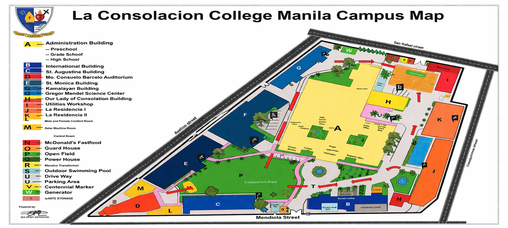

What the system does
It gathers readings from multiple sensors, compares those readings with expected conditions, and presents location-specific fountain information in a form that is easier to review, explain, and act on.
La Consolacion College Manila
For Drinking Fountains at La Consolacion College Manila
Scroll down to see more.
Navigate the Study
Project Overview
The proposed system is designed to monitor water condition in real time, interpret changes across multiple sensor readings, and help school personnel make better maintenance and safety decisions for campus drinking fountains.
It gathers readings from multiple sensors, compares those readings with expected conditions, and presents location-specific fountain information in a form that is easier to review, explain, and act on.
Drinking fountains are shared daily-use facilities, but changes in water condition are not always visible. This project helps make possible issues easier to notice, verify, and communicate before they affect more users.
Students and staff benefit from safer access to drinking water, maintenance teams benefit from clearer operational visibility, and administrators benefit from a more organized basis for planning, reporting, and decision-making.
Core Value
The project is not only about collecting sensor readings. It is about transforming raw measurements into understandable, location-based information that supports safer water access and more responsible facilities management.
The system is designed to help personnel notice potential issues earlier instead of waiting for complaints or visible signs of fountain failure.
Readings become easier to explain when they are tied to fountain locations, organized by parameter, and presented in a consistent visual format.
The concept is grounded in actual shared spaces at LCCM, making the proposed system practical, institutional, and meaningful for the school community.
Objectives of the Study
The objectives of the study define what the proposed system is intended to present, what monitoring elements it emphasizes, and how the project supports a clearer academic discussion of water quality monitoring in campus drinking fountains.
To propose a Smart Water Quality Monitoring System for selected drinking fountains at La Consolacion College Manila that can improve the presentation, interpretation, and location-based understanding of water quality information.
Identify the key physical, chemical, and operational water parameters relevant to drinking fountain monitoring.
Present selected drinking fountain locations through a clear and interactive campus map interface.
Demonstrate how the proposed monitoring system can organize project context, monitoring logic, and deployment intent more clearly.
Support academic discussion on how sensor-based monitoring may contribute to safer campus water access and better maintenance planning.
Rationale of the Study
The rationale explains why drinking fountain monitoring matters in a shared campus environment and why preventive interpretation of water conditions is important for safety, maintenance planning, and responsible facilities management.
Drinking fountains are used by many students, faculty members, staff, and visitors every day. Because water quality changes are not always visible, a more organized monitoring framework can help school personnel understand possible risks sooner, communicate them more clearly, and respond more responsibly.
This study also has practical academic value because it shows how a sensor-based concept can be translated into a presentation-ready system proposal that is easier to explain during planning, evaluation, and defense.
Sensor Suite
Rather than relying on a single indicator, the proposed system combines chemical, physical, and operational measurements. This gives a more balanced view of fountain condition and reduces the chance of overlooking an important change.
Acidity or alkalinity of water
Abnormal pH can indicate water that is too acidic or too alkaline, affecting taste, plumbing integrity, and the overall acceptability of drinking water.
Presence of dirt, particles, and possible microorganisms
High turbidity suggests suspended solids and possible contamination. It can reduce water clarity and may point to conditions that require immediate verification.
Water temperature
Unusually warm water can affect freshness, reduce user acceptability, and create conditions that are less ideal for drinking water safety.
Dissolved salts, minerals, and metals
Elevated TDS may reflect excessive dissolved substances such as salts or metals, influencing taste and signaling the need for further assessment.
Available water reserve in the fountain system
Water level monitoring helps maintain service continuity and can reveal low reserve levels, refill issues, or interruptions in supply.
Amount of oxygen present in water
Dissolved oxygen supports broader interpretation of water condition and can help identify changes that deserve closer inspection.
Oxidizing or reducing condition of water
ORP gives insight into sanitation potential and chemical balance, helping indicate whether water conditions remain within a desirable range.
Ability of water to conduct electricity
Conductivity reflects dissolved ion activity and helps confirm whether water composition is changing beyond expected conditions.
Water discharge behavior
Flow rate monitoring helps identify low-pressure conditions, clogging, or inconsistent delivery that may affect both usability and maintenance needs.
Campus Coverage
The campus map shows how proposed monitoring points can be distributed across LCCM. Click the fountain markers to understand where the system may be applied and how location-based information can support clearer planning, deployment, and maintenance communication.

Proposed Methodology
The methodology of the proposed project focuses on identifying relevant monitoring parameters, organizing how the system would present them, and mapping selected fountain locations in a way that supports academic discussion and future implementation planning.
The study identifies the physical, chemical, and operational parameters most relevant to fountain-based water quality monitoring.
The proposed monitoring logic is organized into sections that explain the purpose of the system, the sensor suite, and the intended monitoring flow.
Selected drinking fountain locations are positioned on the campus map to demonstrate how the system could be applied spatially across key areas.
The proposed system is evaluated through its study rationale, planned monitoring coverage, interface organization, and expected value for safer campus water management.
Scope of the Study
Limitations of the Study
Significance of the Study
Future Application
Conclusion
In conclusion, the proposed Smart Water Quality Monitoring System for Drinking Fountains at La Consolacion College Manila presents a practical and meaningful approach to strengthening campus water safety through structured monitoring, clearer interpretation of water conditions, and more informed maintenance decisions.
By combining key water quality parameters, location-based monitoring through the campus map, and a well-defined presentation of findings, the proposed system aims to support early detection of potential concerns, promote preventive action, and contribute to a safer and more reliable drinking water environment for the LCCM community.